강영화는 2년 전 직군을 변경했고 적성과 딱 맞는 일임을 알았다. 그는 덕업일치의 삶을 즐기며 산다.
공미라는 다소 서툴렀지만 발버둥을 친 끝에 나름 만족스럽고 건강한 사회인의 모습을 갖추게 되었다. 안정적인 일상이 행복임을 깨달았다. 그러나 왠지 모르게 알 수 없는 묘한 불안감을 느낀다.
김경미는 시간을 되돌릴 수 있다면 아끼고 또 아끼고 싶다.
김혜민은 돛을 펼쳤다. 오르락내리락, 예상할 수 없이 난항이, 순항이 되기도 하는 여행에서 방향키를 어디로 잡을 것인지. 스스로를 속이지 않기로 했다.
박지선은 YOLO를 모토로 살기로 했다. 하지만 거기서 달콤함과 씁쓸함이 공존하는 현실을 마주하고 있다. 천천히 조금씩 마음을 가다듬어 보려 한다.
송현주는 입사한 지 약 4년째 이상과 현실의 사이에서 갈팡질팡 하고 있다. 조금씩 뭔가를 하다 보면 이상에 좀 더 가까워진 삶이 되지 않을까 희망해본다.
안누리는 부쩍 욕할 일이 많아진 요즘, 난 이 말을 알고나 쓰는 건가 하고 궁금해졌다.
이정현은 준비되지 않은 채 새로운 상황을 맞닥뜨려 어떻게 해야 할지 모르겠다. 그래서 일단 되는 대로 하기로 했다.
이현송은 이것저것 생각만 했던 일들을 구체적으로 해보기로 한다.
조가영은 내년이면 나이의 앞자리 숫자가 바뀐다. 대체 왜? 믿을 수가 없지만 그렇단다. 몇 달 사이 많은 것들이 무너지고 세워져 생각이 참 많이 바뀌었다. 혼란한 마음을 다독이며 기본으로 돌아가 다시 한 걸음씩 걸어보려 한다.
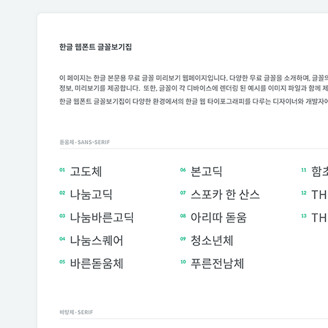
 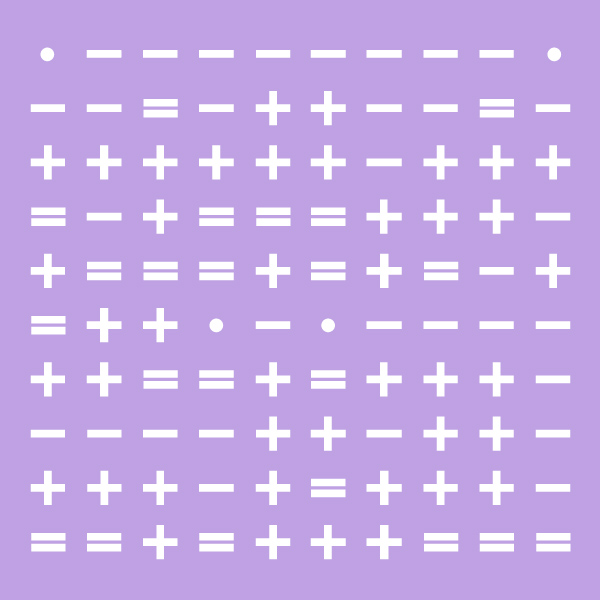
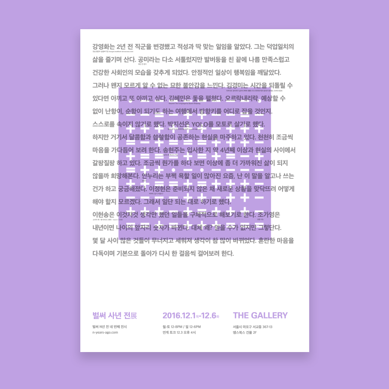
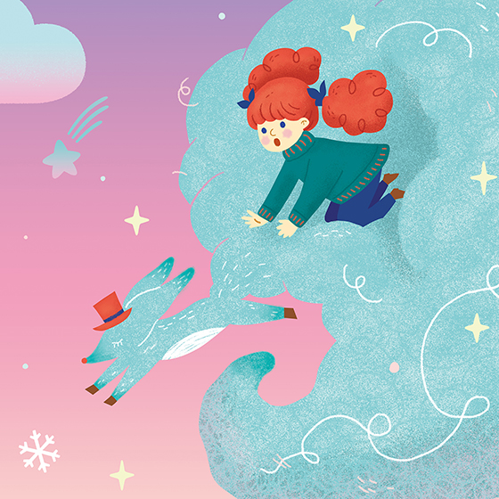
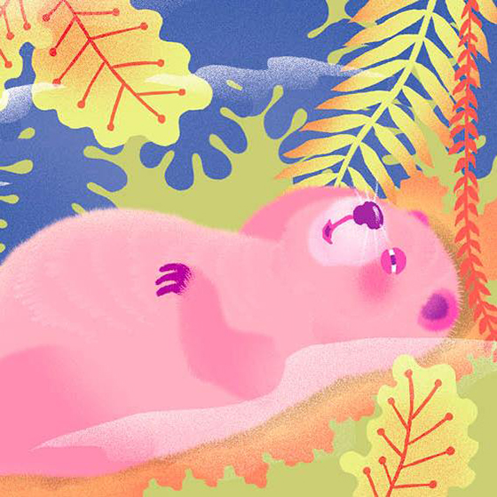
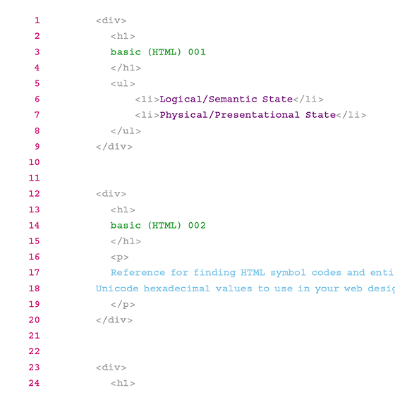
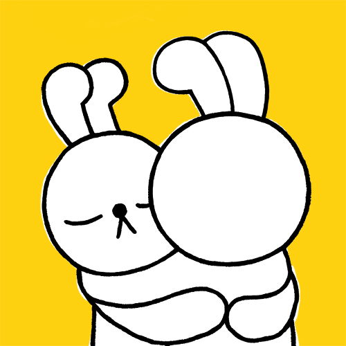
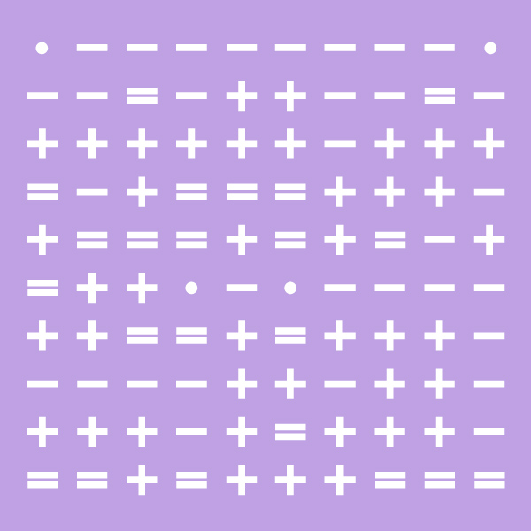
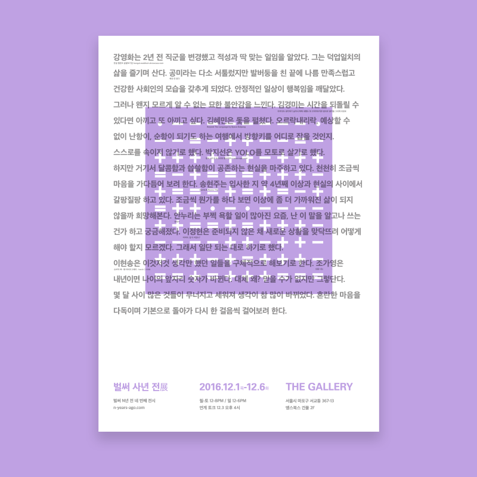
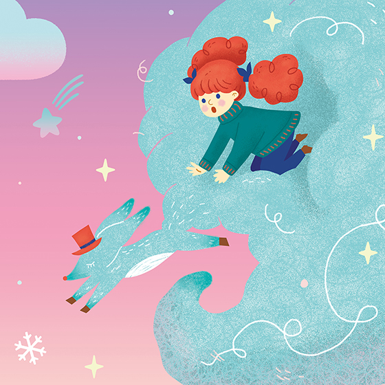
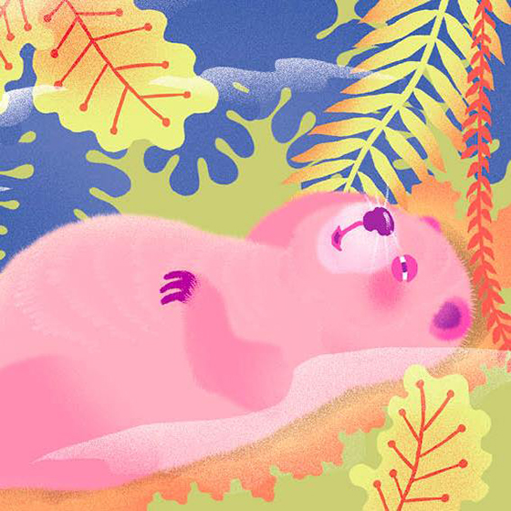
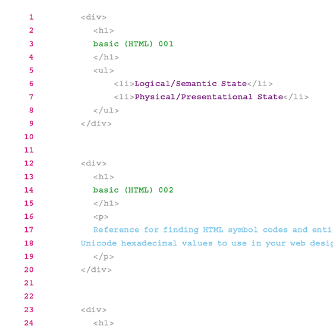
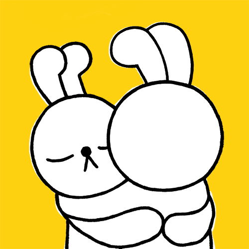
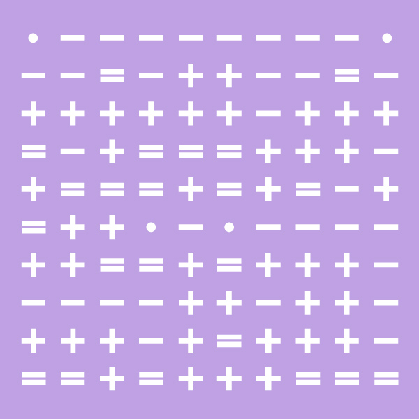
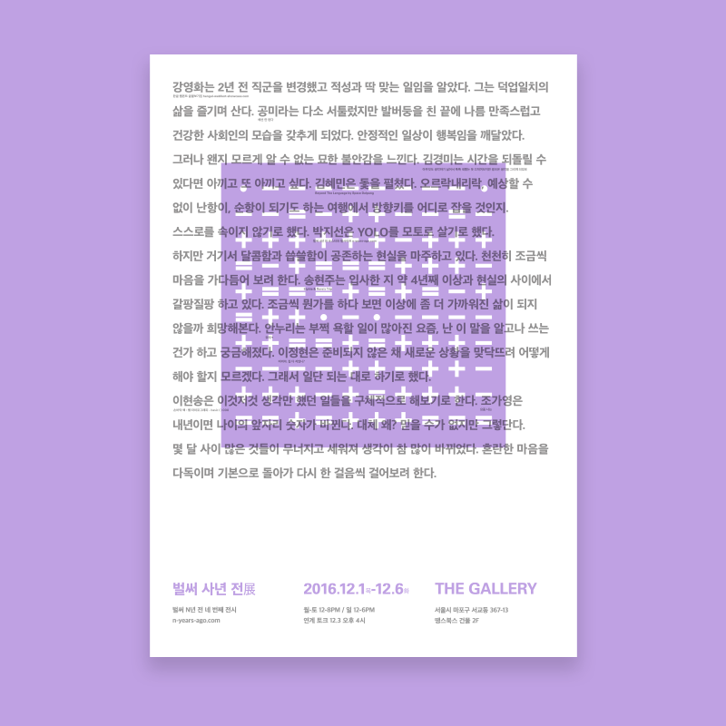
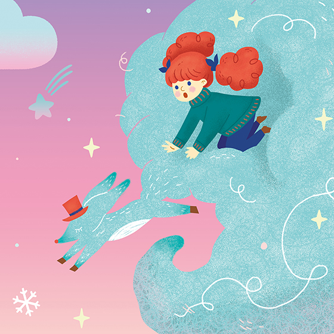
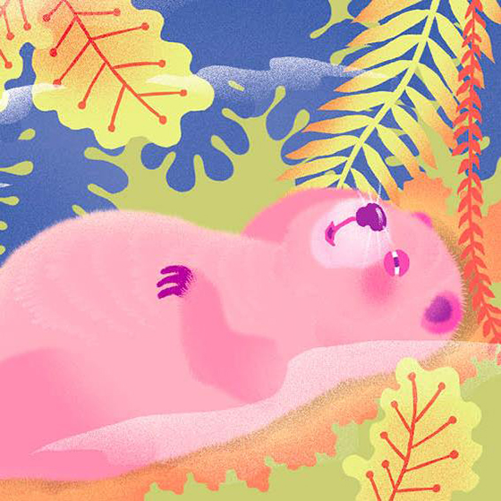
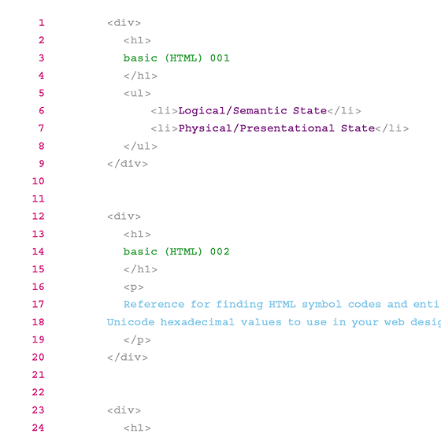
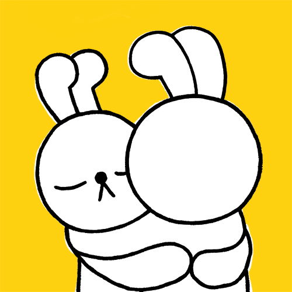